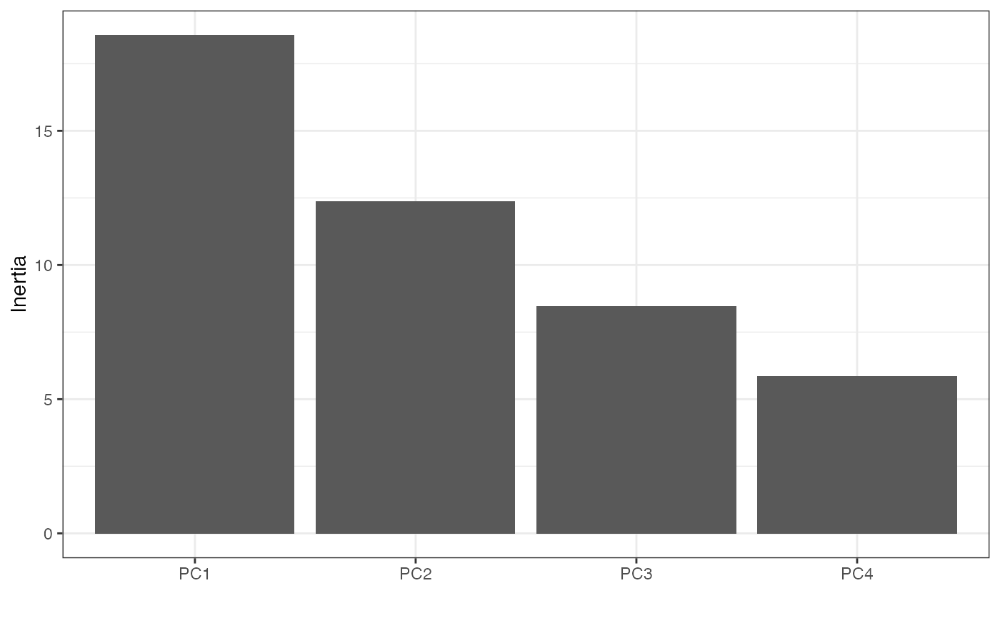
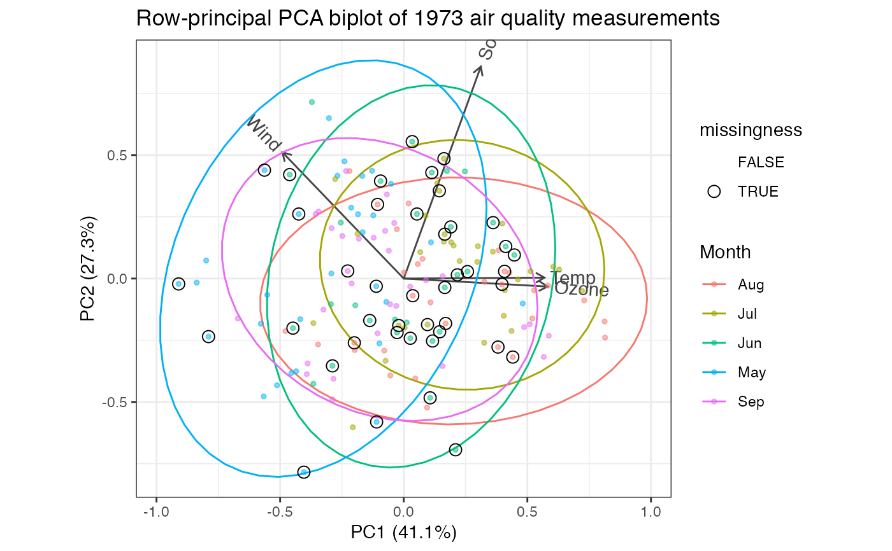

methods-nipals.RdThese methods extract data from, and attribute new data to,
objects of class "nipals_ord". This is a class introduced in this package
to identify objects returned by nipals_ord(), which wraps
nipals::nipals().
# S3 method for nipals_ord
as_tbl_ord(x)
# S3 method for nipals_ord
recover_rows(x)
# S3 method for nipals_ord
recover_cols(x)
# S3 method for nipals_ord
recover_inertia(x)
# S3 method for nipals_ord
recover_coord(x)
# S3 method for nipals_ord
recover_conference(x)
# S3 method for nipals_ord
augmentation_rows(x)
# S3 method for nipals_ord
augmentation_cols(x)
# S3 method for nipals_ord
augmentation_coord(x)An ordination object.
# incomplete air quality measurements from New York
class(airquality)
#> [1] "data.frame"
head(airquality)
#> Ozone Solar.R Wind Temp Month Day
#> 1 41 190 7.4 67 5 1
#> 2 36 118 8.0 72 5 2
#> 3 12 149 12.6 74 5 3
#> 4 18 313 11.5 62 5 4
#> 5 NA NA 14.3 56 5 5
#> 6 28 NA 14.9 66 5 6
# single date variable
airquality %>%
transform(Date = as.Date(paste("1973", Month, Day, sep = "-"))) %>%
subset(select = -c(Month, Day)) ->
air_quality
# NIPALS on air quality measures
air_quality[, seq(4L)] %>%
nipals_ord() %>%
as_tbl_ord() %>%
print() -> air_nipals
#> # A tbl_ord of class 'nipals_ord': (153 x 4) x (4 x 4)'
#> # 4 coordinates: PC1, PC2, ..., PC4
#> #
#> # Rows (standard): [ 153 x 4 | 0 ]
#> PC1 PC2 PC3 ... |
#> |
#> 1 -0.0164 -0.0269 -0.148 |
#> 2 -0.0229 -0.0748 -0.0588 ... |
#> 3 -0.0679 0.00579 0.0326 |
#> 4 -0.0622 0.118 -0.171 |
#> 5 -0.183 -0.0669 -0.0367 |
#>
#> #
#> # Columns (standard): [ 4 x 4 | 0 ]
#> PC1 PC2 PC3 ... |
#> |
#> 1 0.581 -0.0325 0.0884 |
#> 2 0.312 0.859 -0.379 ... |
#> 3 -0.491 0.511 0.636 |
#> 4 0.569 0.00367 0.666 |
# summarize ordination
glance(air_nipals)
#> # A tibble: 1 × 7
#> rank n.row n.col inertia prop.var.1 prop.var.2 class
#> <int> <int> <int> <dbl> <dbl> <dbl> <chr>
#> 1 4 153 4 45.2 0.411 0.273 nipals_ord
# bind dates to observation coordinates
air_nipals %>%
cbind_rows(air_quality[, 5L, drop = FALSE]) %>%
mutate_rows(missingness = apply(is.na(air_quality[, 1:4]), 1L, any)) ->
air_nipals
# by default, no inertia is conferred
get_conference(air_nipals)
#> [1] 0 0
# recover observation and measurement standard coordinates
head(get_rows(air_nipals))
#> PC1 PC2 PC3 PC4
#> 1 -0.01636692 -0.026929954 -0.147758095 0.04330522
#> 2 -0.02285832 -0.074792765 -0.058800591 0.01048541
#> 3 -0.06791808 0.005788455 0.032556709 -0.04328294
#> 4 -0.06223153 0.118481384 -0.171240217 0.01792806
#> 5 -0.18326627 -0.066913179 -0.036727577 0.06332982
#> 6 -0.09859770 0.074359038 -0.009799368 0.11252125
get_cols(air_nipals)
#> PC1 PC2 PC3 PC4
#> Ozone 0.5814751 -0.032476898 0.08835091 0.8081003
#> Solar.R 0.3118714 0.858686036 -0.37860319 -0.1485064
#> Wind -0.4907629 0.511458750 0.63646180 0.3041021
#> Temp 0.5690121 0.003672807 0.66616073 -0.4821220
# augment measurements with names and scaling parameters
augment_ord(air_nipals)
#> # A tbl_ord of class 'nipals_ord': (153 x 4) x (4 x 4)'
#> # 4 coordinates: PC1, PC2, ..., PC4
#> #
#> # Rows (standard): [ 153 x 4 | 3 ]
#> PC1 PC2 PC3 ... | .name Date missingness
#> | <chr> <date> <lgl>
#> 1 -0.0164 -0.0269 -0.148 | 1 1 1973-05-01 FALSE
#> 2 -0.0229 -0.0748 -0.0588 ... | 2 2 1973-05-02 FALSE
#> 3 -0.0679 0.00579 0.0326 | 3 3 1973-05-03 FALSE
#> 4 -0.0622 0.118 -0.171 | 4 4 1973-05-04 FALSE
#> 5 -0.183 -0.0669 -0.0367 | 5 5 1973-05-05 TRUE
#> # … with 148 more rows
#> #
#> # Columns (standard): [ 4 x 4 | 1 ]
#> PC1 PC2 PC3 ... | .name
#> | <chr>
#> 1 0.581 -0.0325 0.0884 | 1 Ozone
#> 2 0.312 0.859 -0.379 ... | 2 Solar.R
#> 3 -0.491 0.511 0.636 | 3 Wind
#> 4 0.569 0.00367 0.666 | 4 Temp
# summarize principal components
tidy(air_nipals)
#> # A tibble: 4 × 6
#> .name .eig .R2 .iter .inertia .prop_var
#> <fct> <dbl> <dbl> <dbl> <dbl> <dbl>
#> 1 PC1 18.6 0.565 17 18.6 0.411
#> 2 PC2 12.4 0.251 13 12.4 0.273
#> 3 PC3 8.44 0.126 15 8.44 0.187
#> 4 PC4 5.84 0.0575 3 5.84 0.129
# scree plot of proportion of variance (inertia)
tidy(air_nipals) %>%
ggplot(aes(x = .name, y = .prop_var)) +
theme_bw() +
scale_y_continuous(labels = scales::percent) +
geom_col() +
labs(x = "", y = "Proportion of inertia")

# fortification adds all above columns
fortify(air_nipals)
#> # A tibble: 157 × 7
#> PC1 PC2 PC3 PC4 Date missingness .matrix
#> <dbl> <dbl> <dbl> <dbl> <date> <lgl> <chr>
#> 1 -0.0164 -0.0269 -0.148 0.0433 1973-05-01 FALSE rows
#> 2 -0.0229 -0.0748 -0.0588 0.0105 1973-05-02 FALSE rows
#> 3 -0.0679 0.00579 0.0326 -0.0433 1973-05-03 FALSE rows
#> 4 -0.0622 0.118 -0.171 0.0179 1973-05-04 FALSE rows
#> 5 -0.183 -0.0669 -0.0367 0.0633 1973-05-05 TRUE rows
#> 6 -0.0986 0.0744 -0.00980 0.113 1973-05-06 TRUE rows
#> 7 -0.0286 0.0728 -0.199 -0.0278 1973-05-07 FALSE rows
#> 8 -0.128 -0.0189 -0.0399 0.143 1973-05-08 FALSE rows
#> 9 -0.194 -0.00471 0.147 0.203 1973-05-09 FALSE rows
#> 10 -0.0258 -0.00892 -0.111 0.0102 1973-05-10 TRUE rows
#> # … with 147 more rows
# row-principal biplot with monthly ellipses
air_nipals %>%
augment_ord() %>%
confer_inertia("rows") %>%
ggbiplot() +
theme_bw() +
geom_cols_vector(color = "#444444") +
geom_cols_text_radiate(aes(label = .name), color = "#444444") +
stat_rows_ellipse(aes(color = format(Date, "%b"))) +
geom_rows_point(aes(color = format(Date, "%b")), size = 1, alpha = .5) +
geom_rows_point(aes(shape = missingness), size = 3) +
scale_shape_manual(values = c(`TRUE` = 1L, `FALSE` = NA)) +
ggtitle("Row-principal PCA biplot of 1973 air quality measurements") +
labs(color = "Month")
#> Warning: Removed 111 rows containing missing values (geom_point).
